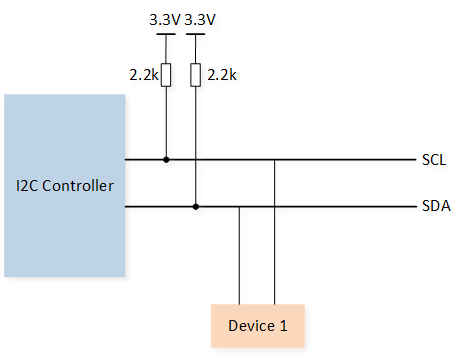
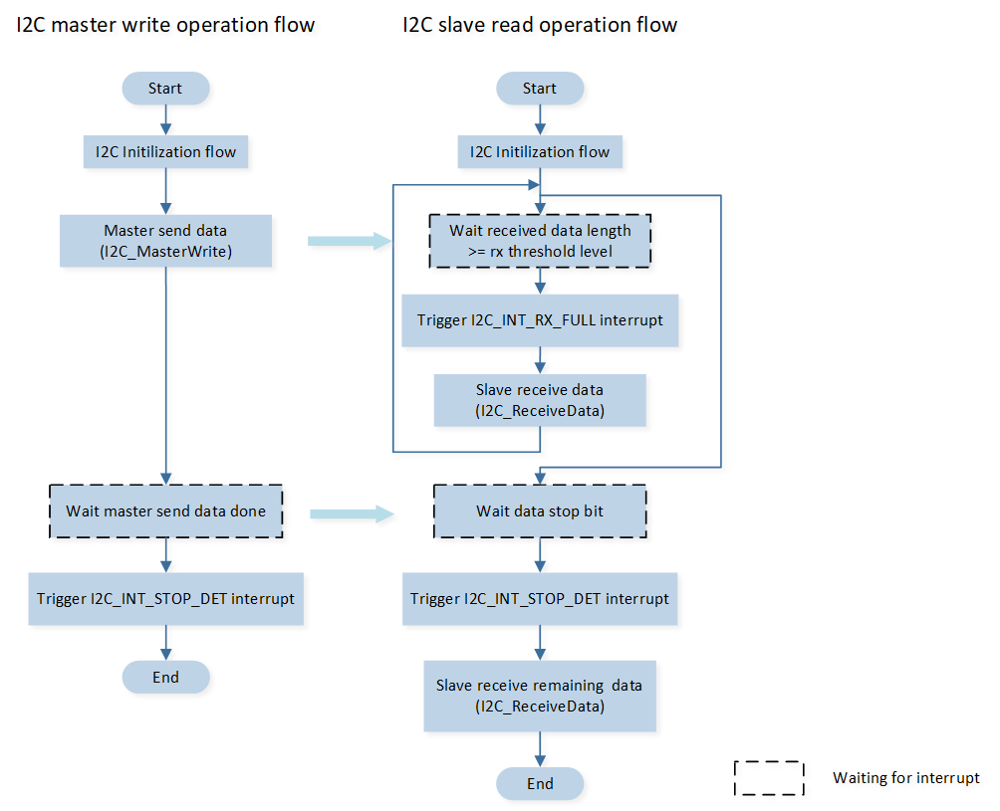
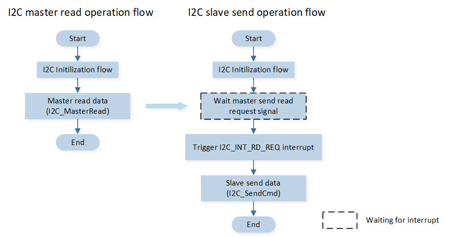
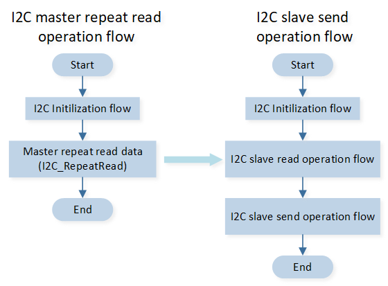

LoopBack
该示例演示了使用中断功能，进行 I2C 主设备与从设备通信，会将主设备与从设备对接实现自发自收。它的三种通信模式的示例如下：
通信模式 |
简要描述 |
配置选项 宏定义 |
|---|---|---|
主设备发送数据从设备接收数据 |
|
|
从设备接收数据从设备发送数据 |
|
|
主设备先发送数据后接收数据 |
|
在该示例中，I2C0 被配置为主设备，I2C1 被配置为从设备。
环境需求
该示例的环境需求，可参考 环境需求。
硬件连线
连接 P4_0（主设备的 SCL）和 P4_2（从设备的 SCL），P4_1（主设备的 SDA）和 P4_3（从设备的 SDA），
备注
SCL 的频率受上拉电阻及导线电容的影响。因此，强烈建议选择适当的上拉电阻，确保频率准确。该示例中需要接 2.2 kΩ 上拉电阻。
上拉电阻的连接示意图如下图所示：
{kind=link}

I2C 上拉电阻连接示意图
配置选项
可配置如下宏修改示例功能。注意：如下三个宏仅有一个可以配置成 1。
#define I2C_MASTER_SEND_SLAVE_RECEIVE 0 /*< Set this macro to 1 to modify the sample for master send slave receive function. */ #define I2C_MASTER_RECEIVE_SLAVE_SEND 0 /*< Set this macro to 1 to modify the sample for master receive slave send function. */ #define I2C_MASTER_REPEAT_READ 1 /*< Set this macro to 1 to modify the sample for master repeat read function. */
可配置如下宏修改引脚定义。
#define I2C0_SCL_PIN P4_0 #define I2C0_SDA_PIN P4_1 #define I2C1_SCL_PIN P4_2 #define I2C1_SDA_PIN P4_3
可配置如下宏修改 I2C 数据传输长度。
#define TransferLength 24 /*< Set this macro to modify the transfer length. */
编译和下载
该示例的编译和下载流程，可参考 编译和下载。
测试验证
主设备发送从设备接收
当 EVB 启动后，主设备发送 24 bytes，内容为 0~23 的数据，当主设备发送数据完毕时，触发
I2C_INT_STOP_DET中断，打印中断信息 log。I2C0 Stop signal detected
当从设备接收的数据达到设定的 threshold level 时（本示例中设定为8），触发
I2C_INT_RX_FULL中断，在中断处理函数中打印中断信息 log，并接收数据。I2C1 Rx Full detected
当主设备发送数据完毕时，从设备也检测到停止信号，从设备触发
I2C_INT_STOP_DET中断，在中断处理函数中打印中断信息 log，同时接收剩余数据并打印收到的数据长度和数据内容 log。I2C1 Stop signal detected Slave Recv Date Lenth = 24 I2C1_Slave_ReceiveData=0 ... I2C1_Slave_ReceiveData=23
主设备接收从设备发送
当 EVB 启动后，主设备读预期 24 bytes数据。主设备向从设备发送读请求指令。
从设备收到主设备发来的读请求，触发
I2C_INT_RD_REQ中断，在中断处理函数中打印中断信息log，并向主设备发送 24 bytes 内容为 10~33 的数据。Enter I2C1 interrupt I2C1_INT_RD_REQ!
主设备接收数据完毕后，打印接收到的数据。
Master Read data = 10 ... Master Read data = 33
主设备先发送后接收
当 EVB 启动后，主设备向从设备发送 4 bytes，内容为 1~4 的数据。
主设备在发送数据完毕后，读预期 24 bytes数据，向从设备发送读请求指令。
从设备收到主设备发来的读请求，触发
I2C_INT_RD_REQ中断，在中断处理函数中打印中断信息log，并向主设备发送 24bytes，内容为 10~33 的数据。Enter I2C1 interrupt I2C1_INT_RD_REQ!
从设备向主设备发送数据完毕，主设备产生停止信号，从设备触发
I2C_INT_RX_DONE和I2C_INT_STOP_DET中断，在中断处理函数中打印 步骤1 接收的数据。I2C1 RX_DONE detected I2C1 Stop signal detected Slave Recv Date Lenth = 4 I2C1_Slave_ReceiveData=1 I2C1_Slave_ReceiveData=2 I2C1_Slave_ReceiveData=3 I2C1_Slave_ReceiveData=4
主设备接收数据完毕后，打印接收到的数据。
Master Repeat Read data = 10 ... Master Repeat Read data = 33
代码介绍
该章节主要介绍示例中的初始化和相应功能实现的代码和流程说明。
源码路径
工程文件和源码路径如下：
工程路径:
sdk\samples\peripheral\i2c\trx_loopback\proj源码路径:
sdk\samples\peripheral\i2c\trx_loopback\src
初始化
外设的初始化流程可参考 General Introduction 中的 初始化流程 部分。
调用
Pad_Config()与Pinmux_Config()，配置对应引脚的 PAD 和 PINMUX 。void board_i2c_master_init(void) { Pad_Config(I2C_MASTER_SCL_PIN, PAD_PINMUX_MODE, PAD_IS_PWRON, PAD_PULL_UP, PAD_OUT_ENABLE, PAD_OUT_HIGH); Pad_Config(I2C_MASTER_SDA_PIN, PAD_PINMUX_MODE, PAD_IS_PWRON, PAD_PULL_UP, PAD_OUT_ENABLE, PAD_OUT_HIGH); Pinmux_Config(I2C_MASTER_SCL_PIN, I2C0_CLK); Pinmux_Config(I2C_MASTER_SDA_PIN, I2C0_DAT); } void board_i2c_slave_init(void) { Pad_Config(I2C_SLAVE_SCL_PIN, PAD_PINMUX_MODE, PAD_IS_PWRON, PAD_PULL_UP, PAD_OUT_ENABLE, PAD_OUT_HIGH); Pad_Config(I2C_SLAVE_SDA_PIN, PAD_PINMUX_MODE, PAD_IS_PWRON, PAD_PULL_UP, PAD_OUT_ENABLE, PAD_OUT_HIGH); Pinmux_Config(I2C_SLAVE_SCL_PIN, I2C1_CLK); Pinmux_Config(I2C_SLAVE_SDA_PIN, I2C1_DAT); }
调用
RCC_PeriphClockCmd()，开启 I2C 时钟。对 I2C 外设进行初始化：
定义
I2C_InitTypeDef类型I2C_InitStruct，调用I2C_StructInit()将I2C_InitStruct预填默认值。根据需求修改
I2C_InitStruct参数，I2C0 与 I2C1 的初始化参数配置如下表。调用I2C_Init()，初始化 I2C 外设。
I2C Hardware Parameters |
Setting in the |
I2C0(Master) |
I2C1(Slave) |
|---|---|---|---|
Clock(Hz) |
100000 |
100000 |
|
Device role (I2C master or I2C slave) |
|||
Address mode (7bits/ 10bits mode) |
|||
Slave address |
0x50 |
0x50 |
|
Rx threshold level |
8 |
8 |
|
Auto ACK enable |
调用
I2C_Cmd()使能 I2C 外设。
功能实现
主设备发送从设备接收
主设备发送从设备接收的流程如图所示：
{kind=link}

I2C 主设备发送从设备接收流程
调用
I2C_INTConfig()配置相应 I2C 中断和 NVIC。NVIC 相关配置可参考 中断配置。void nvic_i2c_config(void) { ... #if I2C_MASTER_SEND_SLAVE_RECEIVE I2C_INTConfig(I2C0, I2C_INT_STOP_DET, ENABLE); I2C_INTConfig(I2C1, I2C_INT_RX_FULL, ENABLE); I2C_INTConfig(I2C1, I2C_INT_STOP_DET, ENABLE); I2C_INTConfig(I2C1, I2C_INT_RX_DONE, ENABLE); #endif ... /* Config I2C interrupt */ NVIC_InitTypeDef NVIC_InitStruct; ... }
主设备调用
I2C_MasterWrite()向从设备发送数据。当从设备接收到的数据长度达到设定阈值时，触发
I2C_INT_RX_FULL中断，在中断处理函数中，调用I2C_ReceiveData()接收数据。当主设备完成发送数据时，从设备检测到停止位，从设备触发
I2C_INT_STOP_DET中断，在从设备中断函数内，调用I2C_ReceiveData()接收剩余数据。void I2C1_Handler(void) { ... if (I2C_GetINTStatus(I2C1, I2C_INT_STOP_DET) == SET) { ... lenth = I2C_GetRxFIFOLen(I2C1); for (uint32_t i = 0; i < lenth; i++) { I2C_Rev_Data[I2C_Rev_Index++] = I2C_ReceiveData(I2C1); } I2C_Rev_Data_Lenth += lenth; I2C_ClearINTPendingBit(I2C1, I2C_INT_STOP_DET); ... } ... if (I2C_GetINTStatus(I2C1, I2C_INT_RX_FULL) == SET) { lenth = I2C_GetRxFIFOLen(I2C1); /*read I2C data*/ for (uint32_t i = 0; i < lenth; i++) { I2C_Rev_Data[I2C_Rev_Index++] = I2C_ReceiveData(I2C1); } I2C_Rev_Data_Lenth += lenth; I2C_ClearINTPendingBit(I2C1, I2C_INT_RX_FULL); } }
主设备接收从设备发送
主设备接收从设备发送的流程如图所示：
{kind=link}

I2C master 接收从设备发送流程
调用
I2C_INTConfig()配置相应 I2C 中断和 NVIC。NVIC 相关配置可参考 中断配置。void nvic_i2c_config(void) { ... #if I2C_MASTER_RECEIVE_SLAVE_SEND I2C_INTConfig(I2C1, I2C_INT_RD_REQ, ENABLE); #endif ... /* Config I2C interrupt */ NVIC_InitTypeDef NVIC_InitStruct; ... }
主设备调用
I2C_MasterRead()读预期 24 bytes数据。主设备向从设备发送读请求指令。从设备收到主设备发来的读请求，从设备触发
I2C_INT_RD_REQ中断，在的中断函数内调用I2C_SendCmd()向主设备发送数据。void I2C1_Handler(void) { uint8_t send_data_buffer[100]; for (uint32_t i = 0; i < TransferLength; i++) { send_data_buffer[i] = i + 10; } if (I2C_GetINTStatus(I2C1, I2C_INT_RD_REQ) == SET) { for (uint32_t i = 0; i < TransferLength; i++) { I2C_SendCmd(I2C1, I2C_WRITE_CMD, send_data_buffer[i], DISABLE); } I2C_ClearINTPendingBit(I2C1, I2C_INT_RD_REQ); } ... }
主设备先发送后接收
主设备执行先发送后接收的流程，流程如图所示：
{kind=link}

I2C 主设备先发送后接收流程
调用
I2C_INTConfig()配置相应 I2C 中断和 NVIC。NVIC 相关配置可参考 中断配置。void nvic_i2c_config(void) { ... #if I2C_MASTER_REPEAT_READ I2C_INTConfig(I2C0, I2C_INT_STOP_DET, ENABLE); I2C_INTConfig(I2C1, I2C_INT_RX_FULL, ENABLE); I2C_INTConfig(I2C1, I2C_INT_STOP_DET, ENABLE); I2C_INTConfig(I2C1, I2C_INT_RX_DONE, ENABLE); I2C_INTConfig(I2C1, I2C_INT_RD_REQ, ENABLE); #endif ... /* Config I2C interrupt */ NVIC_InitTypeDef NVIC_InitStruct; ... }
主设备调用
I2C_RepeatRead()，向从设备发送tx_data数据，并从从设备接收rx_data数据。从设备收到主设备发来的读请求，触发
I2C_INT_RD_REQ中断，在中断处理函数中调用I2C_SendCmd()给主设备发送数据。从设备向主设备发送数据完毕，主设备产生停止信号，从设备触发
I2C_INT_RX_DONE和I2C_INT_STOP_DET中断，在中断处理函数中，调用I2C_ReceiveData()接收数据。void I2C1_Handler(void) { uint16_t lenth; uint8_t send_data_buffer[100]; for (uint32_t i = 0; i < TransferLength; i++) { send_data_buffer[i] = i + 10; } if (I2C_GetINTStatus(I2C1, I2C_INT_RD_REQ) == SET) { for (uint32_t i = 0; i < TransferLength; i++) { I2C_SendCmd(I2C1, I2C_WRITE_CMD, send_data_buffer[i], DISABLE); } I2C_ClearINTPendingBit(I2C1, I2C_INT_RD_REQ); } if (I2C_GetINTStatus(I2C1, I2C_INT_STOP_DET) == SET) { /*read I2C receive data*/ lenth = I2C_GetRxFIFOLen(I2C1); for (uint32_t i = 0; i < lenth; i++) { I2C_Rev_Data[I2C_Rev_Index++] = I2C_ReceiveData(I2C1); } I2C_Rev_Data_Lenth += lenth; I2C_ClearINTPendingBit(I2C1, I2C_INT_STOP_DET); ... } if (I2C_GetINTStatus(I2C1, I2C_INT_RX_DONE) == SET) { DBG_DIRECT("I2C1 RX_DONE detected"); I2C_ClearINTPendingBit(I2C1, I2C_INT_RX_DONE); } ... }
See Also
相关 API Reference 请查看：